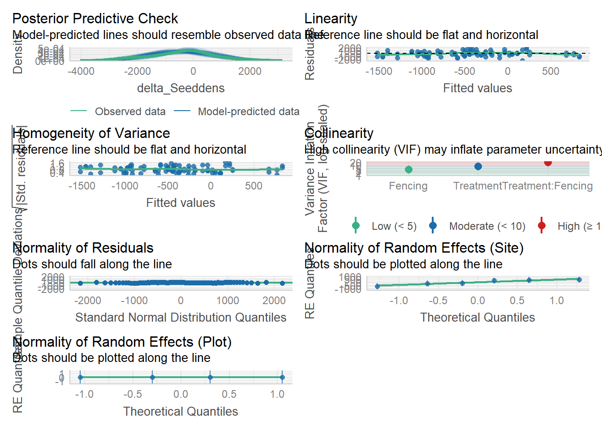
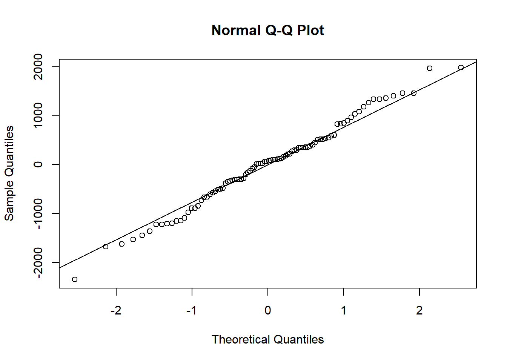

Code
library(tidyverse)
library(vegan)
library(multcompView)
library(patchwork)
library(lmerTest)
library(ggplot2)
library(dplyr)
library(Matrix)
library(lme4)
library(emmeans)
library(here) ## MOST IMPORTANT NOT TO FORGET THIS ONE in quarto
library(robustbase)
library(sjPlot)
library(flextable)
library(officer)
library(glmmTMB)
library(DHARMa) # model diagnostics GLMM
library(performance) # model diagnostics
library(car)
library(openxlsx)
library(broom.mixed) #convert model objects to data frames
library(corrplot)
library(robustlmm) # for robust regression analysis
library(boot) # For bootsrapping
library(DescTools)
library(effectsize)
theme_beautiful <- function() {
theme_bw() +
theme(
text = element_text(family = "Helvetica"),
axis.text = element_text(size = 8, color = "black"),
axis.title = element_text(size = 8, color = "black"),
axis.line.x = element_line(size = 0.3, color = "black"),
axis.line.y = element_line(size = 0.3, color = "black"),
axis.ticks = element_line(size = 0.3, color = "black"),
panel.border = element_blank(),
panel.grid.major.x = element_blank(),
panel.grid.minor.x = element_blank(),
panel.grid.minor.y = element_blank(),
panel.grid.major.y = element_blank(),
plot.margin = unit(c(0.5, 0.5, 0.5, 0.5), units = , "cm"),
plot.title = element_text(
size = 8,
vjust = 1,
hjust = 0.5,
color = "black"
),
legend.text = element_text(size = 8, color = "black"),
legend.title = element_text(size = 8, color = "black"),
legend.position = c(0.9, 0.9),
legend.key.size = unit(0.9, "line"),
legend.background = element_rect(
color = "black",
fill = "transparent",
size = 2,
linetype = "blank"
)
)
}
## LOAD DATA
SapF <- read_csv(here("DATA/March2025/WoodyPC3.csv"))
## create seedling, sapling, trees and cut-stump row
SapF <- SapF %>%
mutate(
woody_cat = case_when(
Woody_class == "Cut stump" ~ "Cut stump",
between(`Max_height(m)`, 0.05, 0.50)~ "Seedlings",
between(`Max_height(m)`, 0.51, 1.49)~ "Saplings",
between(`Max_height(m)`, 1.5, 21.0) ~ "Trees",
TRUE ~ NA_character_
),
Treatment = factor(Treatment),
Fencing = factor(Fencing)
)
#Filter SEEDLINGS
Seedlings <- SapF %>%
filter(woody_cat == "Seedlings", Year %in% c(2024, 2025),
!Treatment %in% c("TFB")) %>%
count(Site, Plot, Subplot, Treatment, Fencing,Year, name = "Seedlings") %>%
mutate(density_ha = Seedlings * 10000 / 600) # convert to ha⁻¹
#comparing at treatment level
Seed_treat <- Seedlings %>%
group_by(Site, Plot, Subplot, Treatment, Fencing, Year) %>%
summarise(mean_dens_ha = mean(density_ha), .groups = "drop")
#sort pre and post treatment
strt_comparison2 <- Seedlings %>%
filter(Year %in% c(2024, 2025)) %>%
mutate(Period = ifelse(Year == 2024, "Pre-treatment", "Post-treatment"))
#reorder so that pre-treatment appears first then post treatment second on the plots
strt_comparison2 <- strt_comparison2 %>%
mutate(Period = factor(Period, levels = c("Pre-treatment", "Post-treatment")))
##Pivot the two years side‑by‑side and compute Δ seedling density
Seedlings_Delta <- Seed_treat %>%
pivot_wider(names_from = Year,
values_from = mean_dens_ha,
names_glue = "dens_{Year}") %>%
mutate(delta_Seeddens = dens_2025 - dens_2024)
#GLMM to test effect of treatment * fencing on seedling density###################
# Make "Unfenced" the reference level
class(Seedlings_Delta$Fencing) # Likely "character" or "ordered factor"[1] "factor"Code
# Convert to unordered factor explicitly
Seedlings_Delta$Fencing <- factor(Seedlings_Delta$Fencing, ordered = FALSE)
# Verify
levels(Seedlings_Delta$Fencing) # Should show "Open" "Closed" (or vice versa)[1] "Fenced" "Unfenced"Code
# Set "Unfenced" as the reference level
Seedlings_Delta$Fencing <- relevel(Seedlings_Delta$Fencing, ref = "Unfenced")
# Site and plot as (crossed) random effects
Seedl3 <- glmmTMB(delta_Seeddens ~ Treatment * Fencing + (1|Site) + (1|Plot),
data = Seedlings_Delta, family = gaussian(link = "identity"))
# check if model converged
performance::check_convergence(Seedl3) # TRUE the model converged[1] TRUECode
# MODEL performance
performance::check_model(Seedl3)
Code
# Shapiro-Wilk Test for Normal distribution of residuals
shapiro.test(resid(Seedl3)) #p < 0.05 → residuals are non-normal.
Shapiro-Wilk normality test
data: resid(Seedl3)
W = 0.99019, p-value = 0.7322Code
# result p = 0.7431, hence residuals are normal. We have sufficient evidence to conclude that the sample data comes from a population that is normally distributed
## create a Q-Q plot of your residuals:
qqnorm(resid(Seedl3))
qqline(resid(Seedl3))
Code
##B. Levene’s Test for Homoscedasticity
# Bin fitted values into 3-5 groups
fitted_binned <- cut(fitted(Seedl3), breaks = 5)
leveneTest(resid(Seedl3) ~ fitted_binned) # p < 0.05 → unequal variance (heteroscedasticity)Levene's Test for Homogeneity of Variance (center = median)
Df F value Pr(>F)
group 4 0.4836 0.7477
87 Code
# results p = 0.918 equal variance
# Assumption on Homoscedasticity
# check homoscedasticity by creating a fitted value vs. residual plot. The scatterplot should show the fitted values of the model vs. the residuals of those fitted values.
# Line should be flat and horizontal if the homoscedasticity assumption is met.
#Dealing with heteroscedasticity (unequal variance) - log transforming the response variable, weighted regression (assigning weights to each data point based on the variance of its fitted value).
# results of the model
summary(Seedl3) Family: gaussian ( identity )
Formula:
delta_Seeddens ~ Treatment * Fencing + (1 | Site) + (1 | Plot)
Data: Seedlings_Delta
AIC BIC logLik -2*log(L) df.resid
1538.8 1566.5 -758.4 1516.8 81
Random effects:
Conditional model:
Groups Name Variance Std.Dev.
Site (Intercept) 1.864e+05 431.7960
Plot (Intercept) 7.959e-01 0.8922
Residual 7.651e+05 874.6753
Number of obs: 92, groups: Site, 6; Plot, 4
Dispersion estimate for gaussian family (sigma^2): 7.65e+05
Conditional model:
Estimate Std. Error z value Pr(>|z|)
(Intercept) -450.4 307.9 -1.463 0.1435
TreatmentF -278.0 376.7 -0.738 0.4605
TreatmentTF 202.8 357.1 0.568 0.5700
TreatmentTHF -401.8 357.1 -1.125 0.2605
FencingFenced 862.0 357.1 2.414 0.0158 *
TreatmentF:FencingFenced -438.2 529.6 -0.827 0.4081
TreatmentTF:FencingFenced -1232.0 505.0 -2.440 0.0147 *
TreatmentTHF:FencingFenced -797.3 505.0 -1.579 0.1144
---
Signif. codes: 0 '***' 0.001 '**' 0.01 '*' 0.05 '.' 0.1 ' ' 1